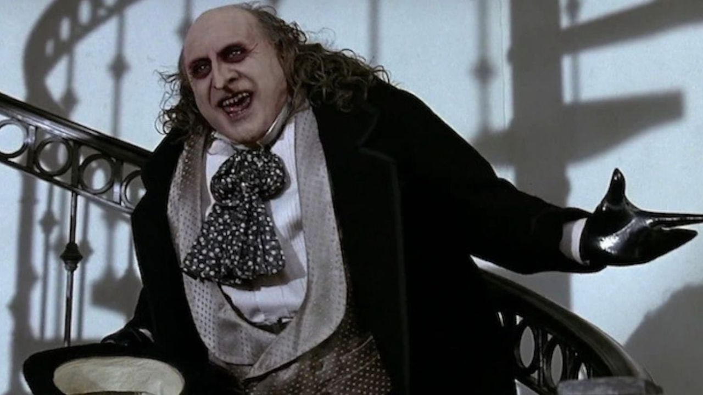

Ameaça Nível Chefe do Crime: O Pinguim
Nome Real: Oswald Cobblepot

Perfil Psicológico Operacional
Um dos poucos vilões do Batman considerado são (o que o mantém em Blackgate, não no Asilo Arkham). É um barão do crime organizado implacável, que se esconde atrás da fachada de empresário legítimo no clube noturno IL.
Nível de Influência na Máfia de Gotham:
Status Social: Pária rejeitado pela alta sociedade Rei do Submundo de Gotham.
> Armamento Oculto (Guarda-Chuvas Modificados)
- Guarda-chuva com lâmina de esgrima oculta.
- Guarda-chuva com dispersor de gás tóxico.
- Guarda-chuva convertido em metralhadora de alto calibre.
"Eles riram de mim por causa da minha aparência. Mas quem está a rir agora, enquanto eu controlo a cidade?"
Interceção de áudio, Escritórios Cobblepot